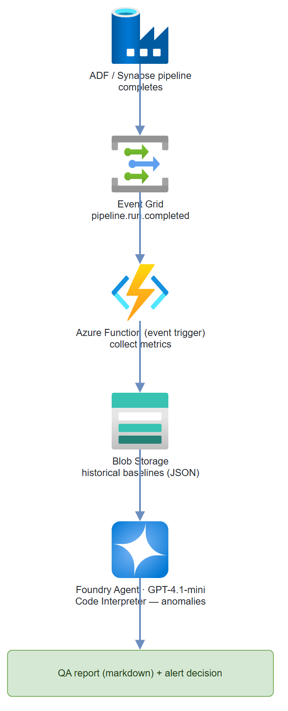

Build it yourself. This project is part of the AI Projects for Cloud Solution Architects portfolio. Full source, code, and the latest updates live in the csa-ai-projects repo on GitHub.
Your data pipeline finished. Did it produce good data? This guide builds an Azure Functions trigger that runs statistical anomaly detection on pipeline output and fires an alert when something looks wrong.
What You're Building
An Azure Function triggered by an Event Grid pipeline-completion event. The function collects run stats (row count, null rates, schema) and sends them to a Foundry agent with Code Interpreter. The agent runs Python-based anomaly detection against historical baselines, generates a QA report, and calls a function to raise an alert if anomalies exceed thresholds. Uses GPT-4.1-mini + Code Interpreter — cheap and effective for statistical work.
Prerequisites
- Microsoft Foundry / Azure AI Services resource with a
gpt-4.1-minideployment (the code calls the model by this deployment name) - Azure Data Factory or Synapse pipeline (as the event source) — optional for a local demo;
test_qa_locally()simulates the event without one - Azure Event Grid subscription on the pipeline completion event
- Azure Storage Account for baseline stats history
- Azure CLI logged in (
az login) with Cognitive Services OpenAI User on the AI Services resource and Storage Blob Data Contributor on the storage account — this demo uses Entra ID auth, not keys AZURE_OPENAI_ENDPOINTandSTORAGE_ACCOUNTset in the environment (or.env)- Python 3.11+,
azure-functions,openai,azure-storage-blob
pip install "openai>=1.30.0" azure-identity azure-functions \
azure-storage-blob python-dotenv
Architecture

Step-by-Step Build
Step 1 — Create the Event Grid subscription
# Subscribe to ADF pipeline run completion events
PIPELINE_ID=$(az datafactory pipeline list \
--resource-group $RG \
--factory-name $ADF_NAME \
--query "[0].id" -o tsv)
az eventgrid event-subscription create \
--name pipeline-qa-trigger \
--source-resource-id /subscriptions/$SUB/resourceGroups/$RG/providers/Microsoft.DataFactory/factories/$ADF_NAME \
--endpoint-type azurefunction \
--endpoint /subscriptions/$SUB/resourceGroups/$RG/providers/Microsoft.Web/sites/$FUNC_APP/functions/pipeline_qa_trigger \
--included-event-types Microsoft.DataFactory.PipelineRunCompleted
Step 2 — Azure Function definition
# function_app.py
import os
import json
import logging
from datetime import datetime, timezone
import azure.functions as func
from azure.storage.blob import BlobServiceClient
from azure.identity import DefaultAzureCredential, get_bearer_token_provider
from openai import AzureOpenAI
app = func.FunctionApp()
logger = logging.getLogger(__name__)
credential = DefaultAzureCredential()
blob_client = BlobServiceClient(
account_url=f"https://{os.environ['STORAGE_ACCOUNT']}.blob.core.windows.net",
credential=credential
)
# One Responses-API client drives the QA agent (Code Interpreter + function
# calling). azure-ai-projects 2.x removed the Assistants threads/runs surface;
# the Responses API replaces it and needs no separate agent registration.
client = AzureOpenAI(
azure_endpoint=os.environ["AZURE_OPENAI_ENDPOINT"],
azure_ad_token_provider=get_bearer_token_provider(
credential, "https://cognitiveservices.azure.com/.default"),
api_version="2025-04-01-preview",
)
MODEL = os.environ.get("QA_MODEL", "gpt-4.1-mini")
@app.event_grid_trigger(arg_name="event")
def pipeline_qa_trigger(event: func.EventGridEvent):
"""Triggered when an ADF pipeline run completes."""
data = event.get_json()
logger.info(f"Pipeline event: {json.dumps(data)}")
pipeline_name = data.get("pipelineName", "unknown")
run_id = data.get("runId", "unknown")
status = data.get("status", "unknown")
if status != "Succeeded":
logger.info(f"Pipeline {pipeline_name} did not succeed (status={status}), skipping QA.")
return
# Collect pipeline run stats
stats = collect_pipeline_stats(pipeline_name, run_id, data)
logger.info(f"Stats collected: {json.dumps(stats)}")
# Load historical baseline
baseline = load_baseline(pipeline_name)
# Run QA analysis — no agent registration; the Responses API takes the
# instructions + tools on each call
report = run_qa_analysis(pipeline_name, stats, baseline)
# Save updated baseline
save_baseline(pipeline_name, stats)
# Log report
logger.info(f"QA Report for {pipeline_name}:\n{report}")
Step 3 — Collect stats from the pipeline run
def collect_pipeline_stats(
pipeline_name: str,
run_id: str,
event_data: dict
) -> dict:
"""
In production: query ADF API or Synapse output tables.
Here we extract from the event payload and ADF activity outputs.
"""
# These come from the Event Grid event data
return {
"pipeline_name": pipeline_name,
"run_id": run_id,
"timestamp": datetime.now(timezone.utc).isoformat(),
"duration_seconds": event_data.get("durationInMs", 0) / 1000,
"rows_read": event_data.get("output", {}).get("rowsRead", 0),
"rows_written": event_data.get("output", {}).get("rowsWritten", 0),
"tables": event_data.get("output", {}).get("tables", []),
# In production, compute these from the actual output data:
"null_rates": event_data.get("output", {}).get("nullRates", {}),
"schema_hash": event_data.get("output", {}).get("schemaHash", ""),
}
Step 4 — Baseline storage helpers
BASELINE_CONTAINER = "pipeline-baselines"
def load_baseline(pipeline_name: str) -> dict | None:
"""Load historical stats baseline from blob storage."""
blob_name = f"{pipeline_name}/baseline.json"
try:
blob = blob_client.get_blob_client(
container=BASELINE_CONTAINER,
blob=blob_name
)
data = blob.download_blob().readall()
return json.loads(data)
except Exception:
logger.info(f"No baseline found for {pipeline_name} — first run.")
return None
def save_baseline(pipeline_name: str, stats: dict):
"""Update baseline with latest run stats (rolling average)."""
existing = load_baseline(pipeline_name) or {
"run_count": 0,
"avg_rows_written": 0,
"avg_duration_seconds": 0,
"schema_hash": stats.get("schema_hash", ""),
"null_rate_history": {}
}
n = existing["run_count"]
existing["run_count"] = n + 1
existing["avg_rows_written"] = (
(existing["avg_rows_written"] * n + stats["rows_written"]) / (n + 1)
)
existing["avg_duration_seconds"] = (
(existing["avg_duration_seconds"] * n + stats["duration_seconds"]) / (n + 1)
)
existing["schema_hash"] = stats.get("schema_hash", existing["schema_hash"])
blob = blob_client.get_blob_client(
container=BASELINE_CONTAINER,
blob=f"{pipeline_name}/baseline.json"
)
blob.upload_blob(
json.dumps(existing, indent=2),
overwrite=True
)
Step 5 — Run QA analysis with Code Interpreter + alerts
There's no separate agent to register. The Responses API takes the instructions and the tools — code_interpreter (for the statistical checks) and a send_alert function tool — on each call. Code Interpreter runs its tool loop server-side; only the custom send_alert function needs a round-trip from your code.
# Responses API tools: Code Interpreter + a custom function tool.
# Function tools are FLAT in the Responses API (no nested "function" key).
TOOLS = [
{"type": "code_interpreter", "container": {"type": "auto"}},
{
"type": "function",
"name": "send_alert",
"description": "Send a data quality alert when anomalies exceed thresholds.",
"parameters": {
"type": "object",
"properties": {
"severity": {"type": "string", "enum": ["critical", "warning", "info"]},
"anomaly_type": {"type": "string"},
"pipeline_name": {"type": "string"},
"details": {"type": "string"},
},
"required": ["severity", "anomaly_type", "pipeline_name", "details"],
},
},
]
INSTRUCTIONS = (
"You are a data pipeline QA analyst. Given current run statistics and "
"historical baseline, perform anomaly detection.\n\n"
"Use the python (code_interpreter) tool to run these checks:\n"
"1. Row count deviation: flag if >20% from baseline average\n"
"2. Null rate spike: flag if any column null rate increased >5 percentage points\n"
"3. Schema drift: flag if schema hash differs from baseline\n"
"4. Duration anomaly: flag if run took >50% longer than baseline average\n\n"
"Compute z-scores for row count and duration. Generate a QA report as markdown.\n\n"
"If any check fails with severity WARNING or higher, call send_alert()."
)
def send_alert(severity: str, anomaly_type: str, pipeline_name: str, details: str) -> str:
"""Real alert: POST to Teams webhook or Azure Monitor."""
webhook_url = os.environ.get("TEAMS_WEBHOOK_URL")
if webhook_url:
import urllib.request
payload = json.dumps({
"@type": "MessageCard",
"summary": f"Data Quality Alert: {pipeline_name}",
"themeColor": "FF0000" if severity == "critical" else "FFA500",
"sections": [{
"activityTitle": f"[{severity.upper()}] {anomaly_type}",
"activityText": f"Pipeline: **{pipeline_name}**\n\n{details}"
}]
}).encode()
req = urllib.request.Request(webhook_url, data=payload,
headers={"Content-Type": "application/json"})
urllib.request.urlopen(req)
logger.warning(f"ALERT [{severity}] {pipeline_name}: {anomaly_type} — {details}")
return json.dumps({"sent": True, "severity": severity})
TOOL_HANDLERS = {"send_alert": send_alert}
def run_qa_analysis(pipeline_name: str, stats: dict, baseline: dict | None) -> str:
"""Run QA analysis via the Responses API; satisfy any send_alert calls."""
response = client.responses.create(
model=MODEL,
instructions=INSTRUCTIONS,
input=(
f"Run QA analysis for pipeline: **{pipeline_name}**\n\n"
f"Current run stats:\n```json\n{json.dumps(stats, indent=2)}\n```\n\n"
f"Historical baseline:\n```json\n{json.dumps(baseline or {}, indent=2)}\n```\n\n"
"Generate a QA report and alert on any anomalies."
),
tools=TOOLS,
)
# Code Interpreter runs server-side; only the custom function needs a round-trip.
for _ in range(8): # safety cap on function-call rounds
fn_calls = [it for it in response.output
if getattr(it, "type", None) == "function_call"]
if not fn_calls:
break
tool_outputs = []
for call in fn_calls:
handler = TOOL_HANDLERS.get(call.name)
args = json.loads(call.arguments or "{}")
result = handler(**args) if handler else json.dumps(
{"error": f"Unknown function: {call.name}"})
tool_outputs.append({
"type": "function_call_output",
"call_id": call.call_id,
"output": result,
})
response = client.responses.create(
model=MODEL,
previous_response_id=response.id,
input=tool_outputs,
tools=TOOLS,
)
return response.output_text
Test It
Send a simulated Event Grid event locally:
def test_qa_locally():
"""Test the QA pipeline without a real Event Grid event."""
pipeline_name = "sales-data-pipeline"
# Simulate a run with a row count anomaly
stats = {
"pipeline_name": pipeline_name,
"run_id": "test-run-001",
"timestamp": datetime.now(timezone.utc).isoformat(),
"duration_seconds": 45,
"rows_read": 15000,
"rows_written": 500, # Suspiciously low (normally ~14000)
"null_rates": {"customer_id": 0.0, "amount": 0.35}, # amount spiked!
"schema_hash": "abc123"
}
baseline = {
"run_count": 30,
"avg_rows_written": 13800,
"avg_duration_seconds": 42,
"schema_hash": "abc123",
"null_rate_history": {"customer_id": 0.001, "amount": 0.02}
}
report = run_qa_analysis(pipeline_name, stats, baseline)
print(report)
test_qa_locally()
Common Mistakes
- Reaching for the old Assistants
agentsAPI.azure-ai-projects2.x removed the threads/runs Assistants surface —AIProjectClienthas no.agents, andMessageRole/SubmitToolOutputsActionaren't importable fromazure.ai.projects.models. Drive the QA agent withclient.responses.create(..., tools=[code_interpreter, send_alert])and a function-call loop, as shown above. - Nesting the function tool like Chat Completions. In the Responses API a function tool is flat —
{"type": "function", "name": ..., "parameters": ...}— not{"type": "function", "function": {...}}. Parsing also differs: function calls arrive asoutputitems withtype == "function_call"(usecall.name,call.arguments,call.call_id), and you return results as{"type": "function_call_output", "call_id": ..., "output": ...}. - Agent not detecting anomalies because baseline is None. On first run, there's no baseline. Have the agent document that baselines are being established rather than failing silently.
- Code Interpreter output not included in report. Always check that
contentblocks include the code output. If the agent generates charts, retrieve them withget_file_content. - Event Grid event schema varies by ADF version. Test with
az eventgrid event-subscription showto confirm the actual fields in your pipeline completion events before coding against them.
Extend It
- Great Expectations integration: Replace the hardcoded thresholds with a Great Expectations suite stored in blob storage. The agent loads and runs expectations as Python code.
- Slack digest: Batch QA results from all pipelines that run overnight. At 8 AM, a timer-triggered function sends a single digest message to Slack with a summary table.
- Auto-remediation: For known failure modes (e.g., null spike in
amountcolumn always means upstream API was down), the agent doesn't just alert — it calls a remediation function that triggers a pipeline re-run with the backup data source.